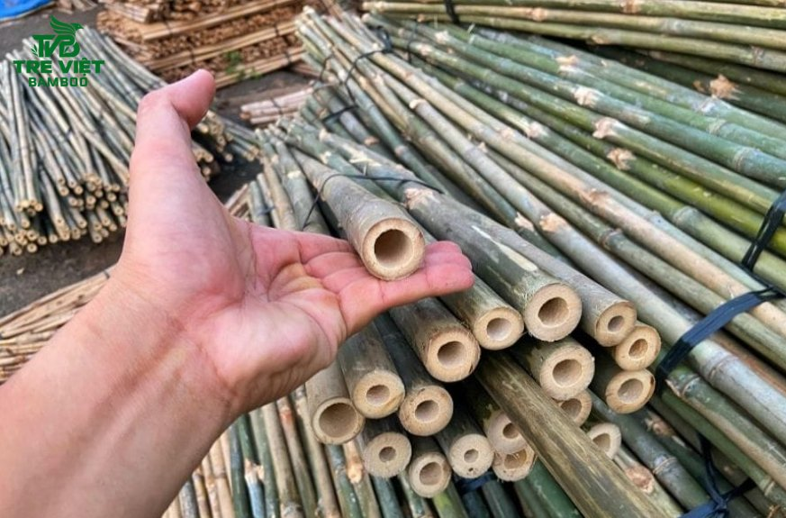
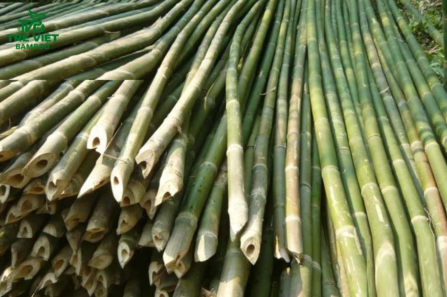
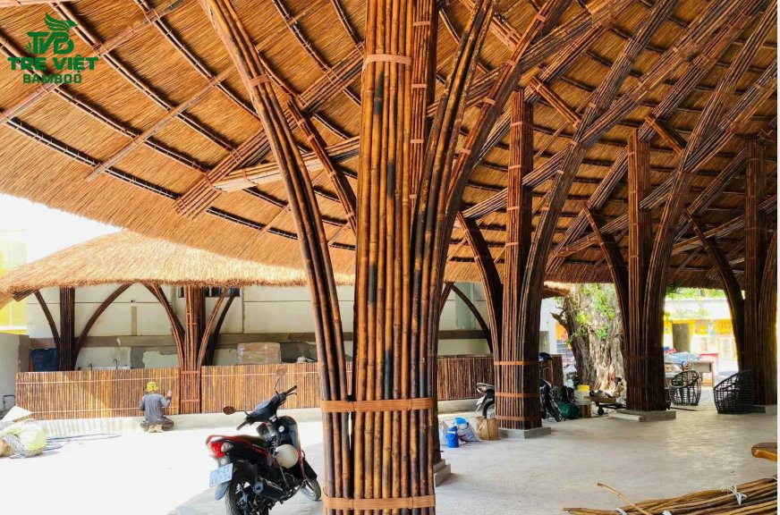
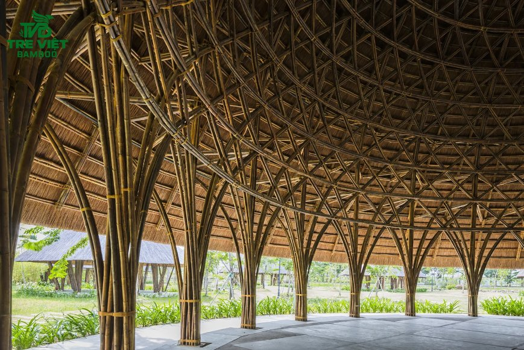
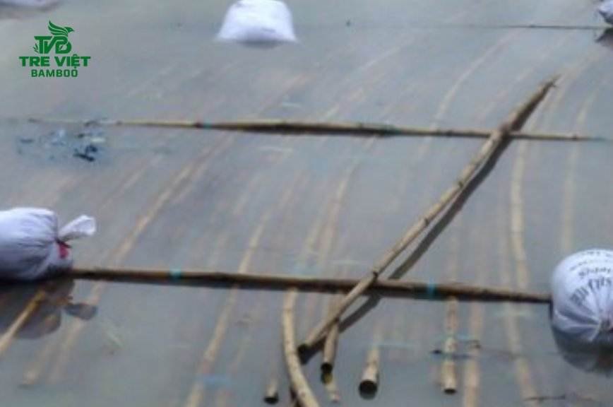
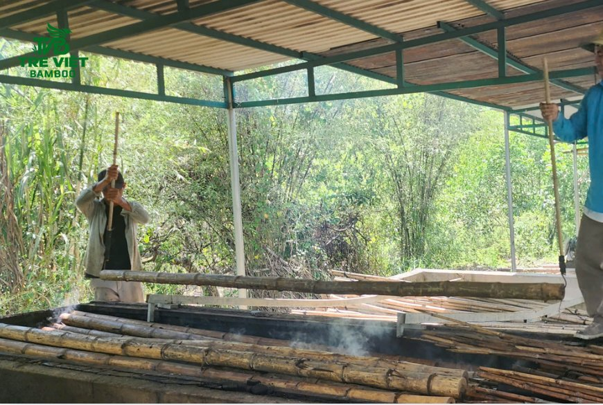

Tầm vông là vật liệu tự nhiên được ứng dụng rộng rãi trong lĩnh vực xây dựng, trang trí nội thất và thiết kế cảnh quan nhờ đặc tính tương đối nhẹ, thân cứng và hình dáng thẳng đẹp. Tuy nhiên, để vật liệu tự nhiên duy trì chất lượng trong quá trình sử dụng, tầm vông cần được xử lý đúng kỹ thuật nhằm hạn chế mối mọt, nấm mốc và tình trạng nứt thân.
Tại Tre Việt Building, việc lựa chọn nguyên liệu và áp dụng phương pháp xử lý phù hợp là những yếu tố quan trọng để nâng cao độ bền, tính thẩm mỹ cho từng hạng mục. Vậy, cách xử lý tầm vông chuẩn chỉnh như thế nào? Theo dõi bài viết để biết thêm thông tin chi tiết bạn nhé!
Ứng dụng của tầm vông trong thi công công trình

Với đặc tính tự nhiên cùng khả năng kết hợp linh hoạt với nhiều loại vật liệu, tầm vông được sử dụng trong nhiều hạng mục kiến trúc khác nhau. Tùy theo mục đích sử dụng, nguyên liệu có thể được gia công thành kết cấu, vật liệu trang trí hoặc các chi tiết hoàn thiện cho không gian.
Xây dựng nhà tre và công trình truyền thống
Tầm vông là một trong những vật liệu quen thuộc trong kiến trúc dân gian Việt Nam, đặc biệt ở các khu vực nông thôn. Thân cây có thể được sử dụng làm cột, xà ngang, khung vách hoặc kết cấu mái cho nhà tre, nhà chòi và các không gian mang phong cách truyền thống.
Khi kết hợp với mái lá, gỗ và các vật liệu tự nhiên khác, tầm vông tạo nên tổng thể mộc mạc, gần gũi với cảnh quan. Tuy nhiên, đối với các hạng mục chịu lực, việc lựa chọn cây, tính toán kết cấu và xử lý vật liệu cần được thực hiện phù hợp với yêu cầu kỹ thuật của từng thiết kế.
Làm khung mái che, giàn và hàng rào

Nhờ thân cây tương đối thẳng và dễ gia công, tầm vông có thể được sử dụng để làm khung mái che, giàn trang trí, hàng rào hoặc các hạng mục phân chia không gian ngoài trời. Đây là lựa chọn phù hợp cho những thiết kế hướng đến phong cách tự nhiên, hạn chế cảm giác nặng nề của các vật liệu xây dựng thông thường.
Trong quá trình thi công, kích thước cây, vị trí liên kết và phương án cố định cần được tính toán cẩn thận. Đặc biệt, những hạng mục thường xuyên tiếp xúc với nắng, mưa cần sử dụng tầm vông đã được xử lý phù hợp để hạn chế tình trạng xuống cấp sớm.
Trang trí nội thất và ngoại thất
Tầm vông còn được ứng dụng trong các hạng mục trang trí như ốp trần, ốp tường, vách ngăn, quầy bar, đèn trang trí và các chi tiết tạo điểm nhấn kiến trúc. Màu sắc tự nhiên cùng hình dáng thân cây giúp không gian trở nên ấm cúng, gần gũi và có nét riêng.
Đối với ngoại thất, vật liệu có thể được sử dụng để làm cổng, giàn che, mái hiên hoặc các chi tiết trang trí sân vườn. Tùy vào vị trí lắp đặt, tầm vông cần được lựa chọn phương pháp xử lý bề mặt và bảo vệ phù hợp nhằm duy trì màu sắc, hạn chế tác động của độ ẩm và thời tiết.
Ứng dụng trong resort, nhà hàng và công trình xanh

Tầm vông là lựa chọn đáng cân nhắc cho các công trình theo phong cách sinh thái như resort, homestay, nhà hàng, quán cà phê và khu nghỉ dưỡng. Vật liệu có thể được sử dụng cho kết cấu trang trí, mái che, vách ngăn hoặc các hạng mục cảnh quan để tạo sự đồng bộ với thiên nhiên.
Bên cạnh yếu tố thẩm mỹ, tầm vông còn là nguồn vật liệu có khả năng tái sinh tương đối nhanh khi được khai thác và quản lý hợp lý. Việc sử dụng vật liệu này kết hợp với phương án thiết kế phù hợp góp phần đa dạng hóa lựa chọn vật liệu cho các công trình hướng đến kiến trúc xanh.
Cách xử lý tầm vông chuẩn kỹ thuật tại Tre Việt Building
Tầm vông là vật liệu tự nhiên được sử dụng phổ biến trong xây dựng nhà tre, làm hàng rào, mái che và trang trí không gian sân vườn. Tuy nhiên, để vật liệu duy trì độ bền và hạn chế nguy cơ mối mọt, việc xử lý trước khi thi công đóng vai trò rất quan trọng. Tùy theo mục đích sử dụng, điều kiện môi trường và yêu cầu thẩm mỹ, tầm vông có thể được xử lý bằng nhiều phương pháp khác nhau.
Phương pháp ngâm bùn truyền thống

Ngâm bùn là phương pháp bảo quản tre truyền thống, tận dụng môi trường bùn để hỗ trợ quá trình xử lý vật liệu. Tầm vông được ngâm trong khoảng thời gian phù hợp, sau đó làm sạch và phơi khô tại nơi thông thoáng.
Phương pháp này phù hợp với các công trình mang phong cách mộc mạc, gần gũi với thiên nhiên. Tuy nhiên, hiệu quả bảo quản còn phụ thuộc vào điều kiện ngâm, thời gian xử lý và cách làm khô vật liệu.
Phương pháp ngâm dung dịch bảo quản
Ngâm dung dịch bảo quản là phương pháp sử dụng các sản phẩm chuyên dụng nhằm hạn chế nguy cơ mối mọt và hỗ trợ kéo dài tuổi thọ của tầm vông. Vật liệu cần được xử lý theo đúng nồng độ, thời gian ngâm và hướng dẫn của nhà sản xuất. Sau khi hoàn tất, tầm vông cần được làm khô phù hợp trước khi đưa vào sử dụng.
Phương pháp này có thể áp dụng cho nhiều hạng mục xây dựng và trang trí, đặc biệt khi vật liệu cần được bảo quản theo yêu cầu kỹ thuật cụ thể.
Phương pháp sấy khô, hun khói

Sấy khô và hun khói là hai phương pháp xử lý tầm vông bằng nhiệt, có cách thực hiện và mục đích khác nhau. Sấy khô giúp giảm độ ẩm trong thân tầm vông, trong khi hun khói sử dụng nhiệt và khói trong điều kiện được kiểm soát để hỗ trợ quá trình bảo quản. Khi thực hiện, cần điều chỉnh nhiệt độ và thời gian phù hợp nhằm hạn chế tình trạng nứt, cong vênh hoặc biến dạng. Đây là những yếu tố quan trọng giúp vật liệu ổn định hơn trước khi sử dụng trong công trình.
Phương pháp phủ keo, sơn hoặc PU
Phủ keo, sơn hoặc PU là phương pháp hoàn thiện bề mặt, giúp tăng tính thẩm mỹ và tạo lớp bảo vệ trước một số tác động từ môi trường. Trước khi phủ, tầm vông cần được làm sạch và làm khô phù hợp để lớp hoàn thiện bám tốt hơn.
Phương pháp này thường được sử dụng cho bàn ghế, vách ngăn, ốp tường, trần và các hạng mục trang trí bằng tầm vông. Tuy nhiên, lớp phủ bề mặt không thay thế hoàn toàn các biện pháp xử lý mối mọt bên trong vật liệu.
Mua tầm vông chất lượng tại Tre Việt Building

Để tạo nên một công trình tre trúc bền đẹp, việc lựa chọn nguồn nguyên liệu chất lượng mới chỉ là bước khởi đầu. Phương án thiết kế phù hợp và năng lực thi công chuyên nghiệp mới là những yếu tố góp phần quyết định chất lượng và tính thẩm mỹ của công trình.
Tre Việt Building cung cấp giải pháp toàn diện từ phân phối nguyên liệu tre trúc đến tư vấn thiết kế và thi công trọn gói. Chúng tôi hướng đến việc mang lại giá trị thiết thực cho khách hàng thông qua:
-
Nguồn tầm vông được tuyển chọn kỹ lưỡng: Chú trọng chất lượng, quy cách và tình trạng vật liệu, kết hợp tư vấn phương án xử lý phù hợp với từng hạng mục thi công.
-
Báo giá rõ ràng, chi phí cạnh tranh: Tư vấn theo số lượng, kích thước và yêu cầu thực tế, hỗ trợ khách hàng chủ động dự trù ngân sách cho công trình.
-
Giải pháp thiết kế và thi công đồng bộ: Khai thác vẻ đẹp mộc mạc của tầm vông, kết hợp hài hòa với cảnh quan, đảm bảo sự cân đối giữa công năng sử dụng và tính thẩm mỹ.
-
Đáp ứng đa dạng nhu cầu: Cung cấp giải pháp cho nhà tre, hàng rào, mái che, chòi nghỉ, khu nghỉ dưỡng và các hạng mục trang trí bằng tre trúc.
Nếu bạn đang tìm kiếm địa chỉ mua tầm vông chất lượng hoặc cần tư vấn giải pháp thi công tre trúc trọn gói, hãy liên hệ Tre Việt Building để được hỗ trợ lựa chọn vật liệu và nhận báo giá phù hợp với nhu cầu thực tế nhé.
CÔNG TY TRÁCH NHIỆM HỮU HẠN TRE VIỆT BUILDING
Địa chỉ: 917 Phạm Văn Đồng, Phường Linh Xuân, Thành phố Hồ Chí Minh
Nhà máy sản xuất: Phú Hợp B, Xã Phú Lâm, Đồng Nai.
Điện thoại – Zalo: 087.6915.999
Email: info@treviet.com.vn
treviet23@gmail.com